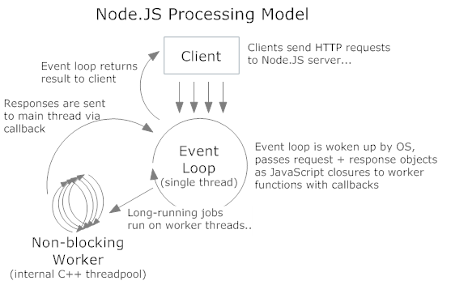

high-performance network-
applications made easy
A presentation by Simon Skov Boisen / @ssboisen
wat?
relatively low-level api for creating
all sorts of network-applications
originally created by Ryan Dahl
waat?
asynchronous i/o framework written in c++
on top of the v8 engine
waaat?
an implementation of the reactor-pattern
by Douglas C. Smidth
waaaat?
an object behavioral pattern for demultiplexing and dispatching handles for synchronous events
waaaaaaaaaat?!!!!111
it's just
javascript
so wat?
it's fast!
it's concurrent!
it's simple
var http = require('http');
http.createServer(function (req, res) {
res.writeHead(200, {'Content-Type': 'text/plain'});
res.end('Hello World\n');
}).listen(1337, '127.0.0.1');
console.log('Server running at http://127.0.0.1:1337/');
var http = require('http');
http.createServer(function (req, res) {
res.writeHead(200, {'Content-Type': 'text/plain'});
res.end('Hello World\n');
}).listen(1337, '127.0.0.1');
console.log('Server running at http://127.0.0.1:1337/');
and it has an awesome community
very large - total packages: 21 842
very active - 5 260 130 downloads in the last week
very friendly
but why?

but how?
single threaded server with a background threadpool
what about asp.net?
uses a thread per connection from the threadpool

context-switching is not free
synchronization is not free
deadlocks are not fun
so wat?

native is 64kb per thread but managed threads are preallocated at 1mb
but async?
ThreadPool.QueueUserWorkItem(
new WaitCallback(TheTaskToRun), null);
naive asynchronous code still use one thread per connection from the asp.net thread pool
and adds
additional context-switching
but async?!!11
using the traditional asynchronous apis (BeginX/EndX) or the new in .NET 4.5 you use iocps
iocp u say?
i/o completion port
highperformance async i/o handled by the OS
optimized for cpu-counts and cpu-caching
then what's the problem?
cultural
infrastructural
iocp all the things!
nodejs uses iocp on windows and
epoll/kqueue on unix for all i/o
single-threaded
you (almost) can't block with i/o
but don't do really cpu intensive tasks
demo-time
references:
Node.js w/1M concurrent connections!